Fitting FINN to forest inventory data (Oregon, US FIA)
Source:vignettes/D-Fit_to_FIA.Rmd
D-Fit_to_FIA.RmdDynamic forest models are usually developed through a combination of encoding ecological knowledge into model structures and parameters. Usually the resulting parameters are then further refined by manual calibration procedures. Here we calibrate FINN directly from data: a subset of the US Forest Inventory & Analysis (FIA) program for Oregon, prepared exactly as in the Preparing your data for FINN vignette.
We fit FINN to 200 sites and evaluate on 200 held-out sites.
The calibration needs a torch backend and takes several minutes, so this vignette is precompiled: the code was run once and its output committed with it. The code you see is exactly the code that produced the output next to it.
library(FINN)
library(torch)
library(data.table)
library(ggplot2)
# Training length. Every epoch simulates the 20 years between the inventories
# for all 200 sites; the convergence section below shows the loss curves and how
# far the parameters still move.
EPOCHS <- 500LThe data
The input tables are a seeded sample of 400 Oregon FIA plots with
their WorldClim climate, split into 200 sites to fit on and 200 holdout
sites for evaluation (?fia_obs_dt). A fitted FINN model
should generalize to other sites, so the holdout is a genuine
out-of-sample test.
# The tables ship with FINN as datasets (?fia_obs_dt), already in FINN's input
# format, so there is nothing to read or prepare.
# --- training sites --------------------------------------------------------
obs_dt <- fia_obs_dt # observations, wide (one column per variable)
env_dt <- fia_env_dt # RAW, untransformed climate
init_trees <- fia_init_trees
species_dt <- fia_species_dt
# --- holdout sites: never seen during fitting ------------------------------
obs_test <- fia_obs_test
env_test <- fia_env_test
init_test <- fia_init_test
cat(sprintf("train: %d sites | holdout: %d sites | %d species | inventory years %s | env years %d-%d\n",
uniqueN(obs_dt$siteID), uniqueN(obs_test$siteID), uniqueN(obs_dt$species),
paste(sort(unique(obs_dt$year)), collapse = " & "), min(env_dt$year), max(env_dt$year)))
#> train: 200 sites | holdout: 200 sites | 11 species | inventory years 10 & 20 & 21 | env years 1-22
species_dt
#> species species_name
#> <int> <char>
#> 1: 1 Pseudotsuga menziesii
#> 2: 2 Pinus ponderosa
#> 3: 3 Pinus contorta
#> 4: 4 Abies concolor
#> 5: 5 Abies grandis
#> 6: 6 Tsuga heterophylla
#> 7: 7 Tsuga mertensiana
#> 8: 8 Lithocarpus densiflorus
#> 9: 9 Alnus rubra
#> 10: 10 Abies amabilis
#> 11: 11 otherFINN simulates the forest in yearly steps. The first
inventory (2001-02) is the starting state at year 0, and the two
remeasurements are compared with the simulated stand 10 and 20 years
later; one site of each sample had its third inventory a year or two
late, at year 21 or 22. Each observation carries
period_length, the years since the previous inventory, and
its growth and mortality are yearly rates:
fit() averages the simulated yearly rates over those years,
and sums the simulated recruits over them for reg. Because
the intervals differ between a few sites, fit() scores
every site over its own window, which it announces when it starts.
unique(obs_dt[, .(siteID, year, period_length)])[, .(sites = .N), by = .(year, period_length)]
#> year period_length sites
#> <int> <int> <int>
#> 1: 10 10 200
#> 2: 20 10 199
#> 3: 21 11 1The environment is supplied in natural units: with
env_autoscale = TRUE (the default) FINN z-standardizes the
predictors internally and reuses the same constants at prediction time,
so raw values are all we ever pass. It has one row per site and
simulated year; the climate here is each plot’s long-term normal, the
same in every year.
ggplot(melt(unique(env_dt[, c("siteID", "temp", "prec")]), id.vars = "siteID",
measure.vars = c("temp", "prec")),
aes(value)) +
geom_histogram(bins = 20, fill = "grey40") +
facet_wrap(~variable, scales = "free", labeller = as_labeller(
c(temp = "Mean~annual~temp~(degree*C)", prec = "Annual~precip~(mm)"), label_parsed)) +
labs(x = NULL, y = "sites") + theme_minimal()
Stand abundance, measured as total basal area per plot (summed over species), against the temperature and precipitation gradients:
# total stand basal area per plot: sum over species, averaged over inventories
site_ba <- obs_dt[, .(ba = sum(ba, na.rm = TRUE)), by = .(siteID, year)][
, .(ba = mean(ba)), by = siteID]
site_env <- env_dt[, .(temp = mean(temp), prec = mean(prec)), by = siteID]
grad <- melt(merge(site_ba, site_env, by = "siteID"),
id.vars = c("siteID", "ba"), measure.vars = c("temp", "prec"),
variable.name = "gradient")
ggplot(grad, aes(value, ba)) +
geom_point(alpha = 0.4, size = 0.9, colour = "grey30") +
geom_smooth(method = "loess", se = FALSE, colour = "firebrick", linewidth = 0.9) +
facet_wrap(~gradient, scales = "free_x", labeller = as_labeller(
c(temp = "Mean~annual~temp~(degree*C)", prec = "Annual~precip~(mm)"), label_parsed)) +
labs(x = NULL, y = "Total basal area per plot") + theme_minimal()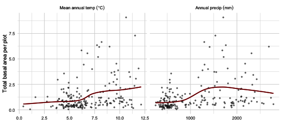
Initial cohorts
Each simulation starts from the observed first inventory. We build the starting state for both samples, the holdout gets its own cohorts, from its own sites.
Nsp <- max(obs_dt$species)
init_cohorts <- makeInitCohorts(init_trees, Nspecies = Nsp)
init_cohorts_test <- makeInitCohorts(init_test, Nspecies = Nsp)
# shared colours for the two model variants, reused by the scatter and ALE panels
model_cols <- c("Process (mechanistic)" = "#1b9e77", "Hybrid (growth = NN)" = "#d95f02")Fit a Process-FINN
In the fully mechanistic configuration every process keeps its
predefined form, while its species and environmental parameters are
learned (optimize* = TRUE) and the formula chooses which
environmental predictors enter the growth, regeneration and mortality
responses. The model is calibrated end-to-end by gradient descent
through the entire simulation.
The four processes are FINN’s defaults, written out here only to give
each a formula: regeneration_capped() is the default
regeneration, a recruitment mean with a fitted carrying capacity
K (see The recruitment cap below). All six
responses are fitted jointly in one fit() call with the
default loss, and this joint fit with the defaults is the calibration we
recommend.
We pass two climate drivers rather than all six
available. ~. would use every column, but the six are
strongly collinear; temp and tempmin correlate
at r = 0.93, prec and precwarmq at 0.86, and
two principal components carry 90% of the variance. Collinear predictors
are not a problem for the fit (that is what ALE is designed
for), but they are a problem for the interpretation below: two
drivers that correlate at 0.93 have no separately identifiable response
curves, so calling each one a “niche” would be reading structure into an
arbitrary split. Two weakly-correlated drivers (r = 0.64) give curves
that mean what the text says they mean. Measured across three seeds on
the earlier ten-year steps, the cost was nothing on growth (0.56 vs 0.55
held out) and ~0.02 on basal area, tree numbers and regeneration.
FINN.seed(42)
m <- finn(
N_species = uniqueN(obs_dt$species),
recruits_dbh = 12.9, # DBH (cm) assigned to a new recruit; ~ FIA's 12.7 cm (5 in) minimum
competition_process = createProcess(~0, FINN::competition, optimizeSpecies = TRUE),
growth_process = createProcess(~ temp + prec, FINN::growth, optimizeSpecies = TRUE, optimizeEnv = TRUE),
regeneration_process = createProcess(~ temp + prec, FINN::regeneration_capped, optimizeSpecies = TRUE, optimizeEnv = TRUE),
mortality_process = createProcess(~ temp + prec, FINN::mortality, optimizeSpecies = TRUE, optimizeEnv = TRUE)
)Balancing the six losses
The objective is the sum of six terms, one per response, and their
raw magnitudes have nothing to do with each other: dbh is a
squared error in cm², growth a squared error on a ratio,
trees a Poisson deviance. Before anything is trained it is
worth seeing what each term would contribute.
fit(epochs = 0) runs the set-up only, the data tensors, the
intercept-only baselines and the weights derived from them, and reports
each response’s share of the objective; nothing is trained and the
parameters stay as they were.
fit(m, env = env_dt, data = obs_dt, init_cohort = init_cohorts, epochs = 0L,
patches = 4, patch_size = 0.06, plot_progress = FALSE)
#> ℹ Using per-site aggregation windows (one backward per batch): period_length varies between sites
#> ℹ weights: intercept-only baseline x your vector (dbh=0.00202, ba=3.9, trees=0.684, growth=1.91e+04, mortality=19, regeneration=0.588)
#> ℹ share of the objective at the intercept-only baseline (scaled): dbh=17%, ba=17%, trees=17%, growth=17%, mortality=17%, regeneration=17%With the default loss_weights = "auto" every loss is
divided by its own intercept-only baseline, the loss of predicting the
single best constant, so each term starts at 1 and the six shares are
equal. The baselines are kept in m$loss_baseline, the
weights in m$loss_weights.
A numeric loss_weights vector multiplies these scaled
losses (since 0.2.0), so a number reads directly as a share:
c(1, 1, 1, 2, 1, 1) gives growth twice the weight of every
other response, and the report says so.
fit(m, env = env_dt, data = obs_dt, init_cohort = init_cohorts, epochs = 0L,
patches = 4, patch_size = 0.06, plot_progress = FALSE,
loss_weights = c(1, 1, 1, 2, 1, 1))
#> ℹ Using per-site aggregation windows (one backward per batch): period_length varies between sites
#> ℹ weights: intercept-only baseline x your vector (dbh=0.00202, ba=3.9, trees=0.684, growth=1.91e+04, mortality=19, regeneration=0.588)
#> ℹ share of the objective at the intercept-only baseline (scaled): dbh=14%, ba=14%, trees=14%, growth=29%, mortality=14%, regeneration=14%weight_scale = FALSE applies the same vector to the
unscaled losses, which is what weights meant before 0.2.0
and what reproduces an analysis fitted with an earlier version. The
report is printed in that mode too, and it shows why the scaling is the
default:
fit(m, env = env_dt, data = obs_dt, init_cohort = init_cohorts, epochs = 0L,
patches = 4, patch_size = 0.06, plot_progress = FALSE,
loss_weights = c(1, 1, 1, 2, 1, 1), weight_scale = FALSE)
#> ℹ Using per-site aggregation windows (one backward per batch): period_length varies between sites
#> ℹ share of the objective at the intercept-only baseline (raw scale): dbh=99%, ba=0.052%, trees=0.29%, growth=4.2e-05%, mortality=0.011%, regeneration=0.34%On the raw scale the diameter term is the objective and the nominal factor of two on growth is a factor of two on a share that was already negligible. Read the printed shares at the start of every fit; a response that holds a fraction of a percent of the objective is a response the fit will not learn.
The fit
fit(m,
env = env_dt, # raw climate
data = obs_dt,
init_cohort = init_cohorts,
device = "cpu",
epochs = EPOCHS,
batchsize = 40L,
patches = 4,
patch_size = 0.06,
lr = 0.01,
env_autoscale = TRUE, # default
checkpoints = 50L, # record every parameter every 50 epochs (m$param_history)
plot_progress = FALSE # the convergence plot below is the readable one
)Replace growth with a neural network (Hybrid-FINN)
FINN’s defining feature is that any single demographic
process can be swapped from a mechanistic function to a neural
network, while the others stay mechanistic, a hybrid
model. The mechanistic processes keep the system ecologically
constrained; the network absorbs structure the fixed functional form
cannot express. Here we replace growth with a small
neural network via createHybrid(), leaving competition,
regeneration and mortality mechanistic, and refit on the same data with
the identical fit() call.
FINN.seed(42)
m_hybrid <- finn(
N_species = uniqueN(obs_dt$species),
recruits_dbh = 12.9,
competition_process = createProcess(~0, FINN::competition, optimizeSpecies = TRUE),
growth_process = createHybrid(~ temp + prec, hidden = c(20L, 20L), transformer = FALSE), # NN replaces growth
regeneration_process = createProcess(~ temp + prec, FINN::regeneration_capped, optimizeSpecies = TRUE, optimizeEnv = TRUE),
mortality_process = createProcess(~ temp + prec, FINN::mortality, optimizeSpecies = TRUE, optimizeEnv = TRUE)
)
fit(m_hybrid,
env = env_dt, data = obs_dt, init_cohort = init_cohorts, device = "cpu",
epochs = EPOCHS, batchsize = 40L, patches = 4, patch_size = 0.06,
lr = 0.01, env_autoscale = TRUE, plot_progress = FALSE
)With both variants fitted, the rest of the vignette inspects and
compares them: training convergence, the skill on the training and the
held-out sites (evaluate()), a summary() of
the fit, the fitted parameters (plot()), a run from bare
ground, and the accumulated local effects that reveal what the network
learned.
Training convergence
Both variants are trained the same way. Because the losses are scaled
by their intercept-only baselines, m$history can be read
per response on one axis, and the dashed line at 1 is a
real reference: it is the intercept-only model, so a curve below it
means that response is predicted better than by its own mean.
hist_dt <- as.data.table(do.call(rbind, m$history))[, 1:6]
setnames(hist_dt, c("dbh", "ba", "trees", "growth", "mort", "reg"))
hist_dt[, epoch := .I]
ggplot(melt(hist_dt, id.vars = "epoch", variable.name = "response"),
aes(epoch, value, colour = response)) +
geom_hline(yintercept = 1, linetype = "dashed", colour = "grey40") +
geom_line(alpha = 0.8) +
scale_y_log10() +
scale_colour_viridis_d() +
labs(x = "epoch", y = "loss / intercept-only baseline\n(1 = no better than the mean)",
colour = NULL) +
theme_minimal()
The structural responses drop well below 1 within a few epochs. The per-tree rates sit much closer to it; they are only weakly constrained by two inventories, which is the honest picture and the reason for the caveat further down.
A flat loss is necessary for convergence, not sufficient: the
objective can be flat along a direction in which the parameters are
still moving, which is what a poorly identified parameter looks like.
fit() keeps the parameters of the last 51 epochs, and
summary() (below) reports how far each one moved over the
last 50. checkpoints = 50 in addition recorded every
parameter block every 50 epochs in m$param_history, to
compare points of the fit further apart (with
folder = "<dir>" the whole model is also written
there at each checkpoint, as epoch_<k>model.pt, to
resume from with torch::torch_load() and a further
fit(), or to compare).
Assess the fit: evaluate()
The fit was calibrated on the 200 training sites, so scoring it there
only tells us how well it reproduces them. The honest question
is whether it transfers. evaluate() answers both: it
simulates the model on the training sites it keeps from
fit() and, with holdout, on the 200 held-out
sites, each started from its own first inventory and driven by its own
environment, and pairs every simulated value with its observation on
site × year × species.
The simulation runs in yearly steps, so a prediction is put together
the way fit() compares it with an inventory: the stand
(dbh, ba, trees) at the year of
the census, the yearly growth and mortality rates of the
period_length years before it compounded into one rate per
year – the geometric mean of 1 + g minus one, and one minus
the geometric mean survival, the functional makeObsData()
derives the observed rates with – and the expected recruits per hectare
(r_mean_ha) summed over those years.
Two optional parts are added here. tree_data, the trees
of the holdout inventories (fia_tree_test), adds the
largest diameter per site, census and species (dbh_max), a
size measure that a few large or many small trees do not shift as much
as the mean diameter. bare_ground = TRUE runs the model
from an empty stand for years years, under the climate of
each of sites held constant: we take the coldest, a middle
and the warmest training site. fit(..., holdout = ) would
run the same evaluation right after the fit.
site_temp <- env_dt[, .(temp = mean(temp)), by = siteID][order(temp)]
bare_sites <- site_temp[c(1, .N %/% 2, .N), siteID] # coldest, middle, warmest
FINN.seed(1)
ev <- evaluate(m,
holdout = list(data = obs_test, env = env_test, init_cohort = init_cohorts_test,
tree_data = fia_tree_test),
bare_ground = TRUE, years = 500, sites = bare_sites, patches = 50)
ev
#> FINN evaluation
#> ===============
#>
#> Training data (observed vs simulated, aggregated as fit() scores):
#> response R2 correlation RMSE bias pred/obs n AUC
#> dbh 0.6308 0.833 13.50357 -5.46851 0.863 1048 NA
#> ba 0.9353 0.971 0.12872 -0.01282 0.892 4400 NA
#> trees 0.8000 0.895 0.75783 0.04324 1.068 4400 NA
#> growth 0.2118 0.559 0.00775 -0.00138 0.875 1003 NA
#> mort 0.0741 0.383 0.10492 -0.00778 1.004 1003 0.639
#> reg -0.0273 0.240 6.15605 0.21111 1.138 4400 NA
#> deaths pred/obs
#> NA
#> NA
#> NA
#> NA
#> 1.3
#> NA
#>
#> Holdout (observed vs simulated, aggregated as fit() scores):
#> response R2 correlation RMSE bias pred/obs n AUC
#> dbh 0.4645 0.7412 13.90761 -4.79831 0.868 1048 NA
#> dbh_max 0.8697 0.9448 10.31176 -4.01634 0.946 393 NA
#> ba 0.9233 0.9680 0.09635 -0.01028 0.882 4400 NA
#> trees 0.8066 0.8986 0.78260 0.02472 1.039 4400 NA
#> growth 0.2984 0.6035 0.00773 -0.00046 0.960 1000 NA
#> mort -0.0256 -0.0208 0.09162 -0.00525 1.006 994 0.524
#> reg 0.0906 0.3144 6.03722 0.09746 1.063 4400 NA
#> deaths pred/obs
#> NA
#> NA
#> NA
#> NA
#> NA
#> 1.25
#> NA
#>
#> Bare ground: 500 years, 3 run(s); plot(x, type = "bare_ground") draws them.The skill measures are R² (1 - SSE/SST, the share of the
observed variation the simulation reproduces; it is negative when the
observed mean predicts better), the Pearson correlation, the RMSE in
each response’s own units, the bias (mean of simulated minus observed)
and pred/obs, the ratio of the mean simulation to the mean
observation. For mortality the AUC replaces R² as the measure of skill
(see Scoring mortality per tree below and the mortality
vignette).
plot() draws the comparison on the holdout
(set = "train" for the training sites): observed against
simulated for the states and growth, with R² in each panel; the ROC
curve of mortality, every tree at risk one case; and the ratio of
simulated to observed recruitment per species, summed over all sites,
because recruitment per site is too noisy for a correlation.
plot(ev)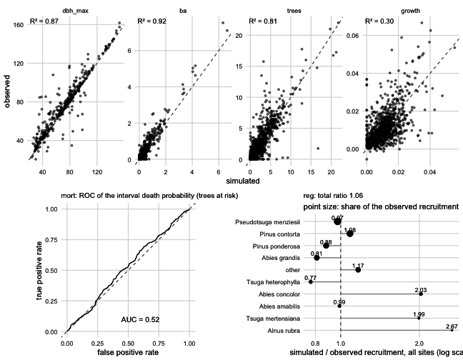
The same skill per species, type = "heatmap": R² (AUC
for mortality) on the left, and the ratio of simulated to observed on
the right, white where the two agree, red where the model under- and
blue where it overestimates:
plot(ev, type = "heatmap")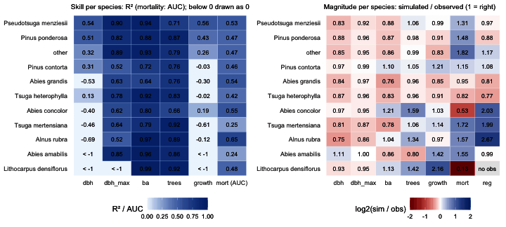
Process against hybrid
The hybrid is evaluated the same way. Side by side, R² and RMSE of both models on the training and the held-out sites:
m_hybrid$eval() # deterministic: dropout off
FINN.seed(1)
ev_hybrid <- evaluate(m_hybrid,
holdout = list(data = obs_test, env = env_test, init_cohort = init_cohorts_test))
skill_of <- function(ev, label)
rbind(ev$train$skill[, .(variable, model = label, split = "train", r2, rmse)],
ev$holdout$skill[, .(variable, model = label, split = "holdout", r2, rmse)])
comparison <- dcast(rbind(skill_of(ev, "Process (mechanistic)"),
skill_of(ev_hybrid, "Hybrid (growth = NN)"))[variable != "dbh_max"],
variable + model ~ split, value.var = c("r2", "rmse"))
setcolorder(comparison, c("variable", "model", "r2_train", "r2_holdout",
"rmse_train", "rmse_holdout"))
cols <- c("r2_train", "r2_holdout", "rmse_train", "rmse_holdout")
comparison[, (cols) := lapply(.SD, signif, 2), .SDcols = cols][]
#> Key: <variable, model>
#> variable model r2_train r2_holdout rmse_train rmse_holdout
#> <fctr> <char> <num> <num> <num> <num>
#> 1: dbh Hybrid (growth = NN) 0.600 0.440 14.0000 14.0000
#> 2: dbh Process (mechanistic) 0.630 0.460 14.0000 14.0000
#> 3: ba Hybrid (growth = NN) 0.940 0.940 0.1200 0.0870
#> 4: ba Process (mechanistic) 0.940 0.920 0.1300 0.0960
#> 5: trees Hybrid (growth = NN) 0.800 0.810 0.7600 0.7700
#> 6: trees Process (mechanistic) 0.800 0.810 0.7600 0.7800
#> 7: growth Hybrid (growth = NN) 0.330 0.200 0.0071 0.0083
#> 8: growth Process (mechanistic) 0.210 0.300 0.0078 0.0077
#> 9: mort Hybrid (growth = NN) 0.032 -0.017 0.1100 0.0910
#> 10: mort Process (mechanistic) 0.074 -0.026 0.1000 0.0920
#> 11: reg Hybrid (growth = NN) -0.030 0.073 6.2000 6.1000
#> 12: reg Process (mechanistic) -0.027 0.091 6.2000 6.0000
# the paired tables of both models, for the sections below
pairs_of <- function(ev, label) rbindlist(list(
copy(ev$train$matched)[, `:=`(model = label, split = "train")],
copy(ev$holdout$matched)[, `:=`(model = label, split = "holdout")]), fill = TRUE)
obs_pred <- rbind(pairs_of(ev, "Process (mechanistic)"),
pairs_of(ev_hybrid, "Hybrid (growth = NN)"), fill = TRUE)Basal area and tree numbers are reconstructed well and hold up on sites the model never saw; the mean diameter is reproduced less well on the held-out sites than on the training sites. The gap between the train and holdout columns is the part that matters, because it is the only evidence that the fitted processes generalise rather than memorise. The noisier per-tree rates (growth, mortality, regeneration) are harder to constrain from two inventories and should be read with that in mind (see the caveat below). The hybrid tracks the mechanistic model on the structural variables, with no growth equation specified, which is what makes hybrids useful when a process’s form is uncertain; the surrounding mechanistic processes still anchor the model ecologically.
A caveat on the rate variables.
growth,mortandregare per-tree rates and are only weakly constrained by two inventories, so their R² is a noisy estimate; refitting with a different random seed moves it by a few hundredths. Differences of that size between the models should not be over-read; the structural variables, estimated from far more information, are what carry the comparison.mortis the extreme case and gets a vignette of its own (Mortality: a binomial response and a neural-network process) because R² and rank correlation are the wrong tools for a response that is mostly zeros; its AUC is the measure to read.
Score what the loss scores
evaluate() pairs on site × year × species, which is the
cell the loss is computed on: fit() compares the patch-mean
of each site, year and species with the observation, and so does the
table. Aggregating the predictions differently before scoring (summing
species to a stand total, averaging the two censuses, pooling sites into
regions) asks a different and usually easier question, and the number it
returns is not the skill of the fitted objective. If a stand total is
what matters, score it as well, but say so; and for a count-weighted
response weight the metric the way the loss does. The mortality vignette
carries this through for the binomial term, whose AUC is weighted by
n_at_risk exactly as the likelihood is.
A model-free reference: persistence
An R² of 0.92 on basal area sounds good until it is compared with the
simplest forecast available: the previous census of the same site and
species, unchanged. On a ten-year interval that persistence
forecast is strong for the state variables, and a model has to beat it
before it can claim to have learned dynamics rather than inertia. The
persistence forecast is no simulation, so it is scored by hand, with the
measures evaluate() uses: the second census of the holdout
sites predicted by the first, next to the two models scored on the same
cells.
r2 <- function(obs, pred) 1 - sum((pred - obs)^2) / sum((obs - mean(obs))^2)
rmse <- function(obs, pred) sqrt(mean((pred - obs)^2))
hold <- obs_pred[split == "holdout" & variable %in% c("dbh", "ba", "trees")]
# the first remeasurement (year 10) stands in as the prediction for the second
# (year 20, or 21/22 where it came late); the observations are the same in the
# tables of both models
obs_hold <- hold[model == "Process (mechanistic)"]
persist <- merge(obs_hold[year > 10, .(siteID, species, variable, obs)],
obs_hold[year == 10, .(siteID, species, variable, pred = obs)],
by = c("siteID", "species", "variable"))
ref <- rbind(persist[, .(variable, obs, pred, model = "Persistence (year 10 as is)")],
hold[year > 10, .(variable, obs, pred, model)])
ref[, .(r2 = round(r2(obs, pred), 2), rmse = signif(rmse(obs, pred), 2)),
by = .(variable, model)][order(variable, model)]
#> variable model r2 rmse
#> <fctr> <char> <num> <num>
#> 1: dbh Hybrid (growth = NN) 0.34 16.000
#> 2: dbh Persistence (year 10 as is) 0.87 6.800
#> 3: dbh Process (mechanistic) 0.36 15.000
#> 4: ba Hybrid (growth = NN) 0.91 0.110
#> 5: ba Persistence (year 10 as is) 0.96 0.076
#> 6: ba Process (mechanistic) 0.89 0.120
#> 7: trees Hybrid (growth = NN) 0.73 0.920
#> 8: trees Persistence (year 10 as is) 0.89 0.600
#> 9: trees Process (mechanistic) 0.72 0.930Persistence wins on all three state variables, and not narrowly. That
is the expected result for a ten-year interval in mature stands: most of
the basal area present at the second census was already there at the
first, and the models are at a disadvantage here, they start from the
year-0 tree list and never see the year-10 census, so their year-20
prediction carries twenty simulated years of compounded error. The
lesson is not that the models are poor but that a holdout R² on
dbh, ba or trees is mostly a
statement about the initial cohorts. The processes are tested by the
rates, and by what the model does over horizons where persistence has
nothing to say, such as the runs from bare ground below. Persistence has
no prediction for the first remeasurement, which is why the table scores
the second only.
Calibration: predicted against observed by decile
A scatter shows the spread; it hides a systematic bias of the kind a fitted model develops when it compresses towards the mean. Binning the predictions into deciles and comparing the mean prediction of each bin with the mean observation in it is the calibration view, and it is cheap. Cells in which the species is absent from both the observation and the prediction are left out: they are most of the table and would pile the lower deciles onto zero.
calib <- obs_pred[split == "holdout" & variable %in% c("ba", "trees") & (obs > 0 | pred > 0)]
calib[, bin := cut(pred, unique(quantile(pred, 0:10 / 10)), include.lowest = TRUE),
by = .(model, variable)]
calib_dt <- calib[, .(pred = mean(pred), obs = mean(obs), n = .N), by = .(model, variable, bin)]
ggplot(calib_dt, aes(pred, obs, colour = model)) +
geom_abline(slope = 1, intercept = 0, colour = "grey40", linewidth = 0.3) +
geom_line(alpha = 0.6) + geom_point(size = 1.6) +
facet_wrap(~variable, scales = "free") +
scale_colour_manual(values = model_cols) +
labs(x = "mean prediction in decile", y = "mean observation in decile", colour = NULL) +
theme_minimal() + theme(legend.position = "top")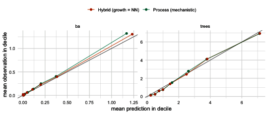
Points on the diagonal are calibrated; a slope below one means the model under-predicts the dense stands and over-predicts the sparse ones, a slope above one the reverse. A correlation is blind to either; R² is not, but it does not say which way the error goes.
A blocked holdout
The 200 holdout sites are a random draw from the same region as the training sites, so every holdout site has training neighbours in climate space, and nearly so in geographic space. That split measures interpolation. The question usually asked of a calibrated model, how it does in conditions or places it was not trained on, needs a holdout that is blocked: with coordinates, hold out whole spatial blocks (grid cells, or clusters of plots); without them, hold out a block of the environmental gradient. The bundled sample carries no coordinates, so the block here is environmental, but the recipe is the same. We hold out the warmest fifth of the training sites, fit the same model on the other 160, and score it on the 40 blocked sites and, for comparison, on the 200 random holdout sites.
site_temp <- env_dt[, .(temp = mean(temp)), by = siteID]
warm <- site_temp[temp > quantile(temp, 0.8), siteID] # the blocked holdout
cool <- setdiff(site_temp$siteID, warm) # the training block
FINN.seed(42)
m_block <- finn(
N_species = Nsp, recruits_dbh = 12.9,
competition_process = createProcess(~0, FINN::competition, optimizeSpecies = TRUE),
growth_process = createProcess(~ temp + prec, FINN::growth, optimizeSpecies = TRUE, optimizeEnv = TRUE),
regeneration_process = createProcess(~ temp + prec, FINN::regeneration_capped, optimizeSpecies = TRUE, optimizeEnv = TRUE),
mortality_process = createProcess(~ temp + prec, FINN::mortality, optimizeSpecies = TRUE, optimizeEnv = TRUE)
)
fit(m_block,
env = env_dt[siteID %in% cool], data = obs_dt[siteID %in% cool],
init_cohort = makeInitCohorts(init_trees[siteID %in% cool], Nspecies = Nsp),
device = "cpu", epochs = EPOCHS, batchsize = 40L, patches = 4, patch_size = 0.06,
lr = 0.01, plot_progress = FALSE
)Each holdout is one call of evaluate():
FINN.seed(1)
ev_random <- evaluate(m_block, holdout = list(
data = obs_test, env = env_test, init_cohort = init_cohorts_test))
ev_blocked <- evaluate(m_block, holdout = list(
data = obs_dt[siteID %in% warm], env = env_dt[siteID %in% warm],
init_cohort = makeInitCohorts(init_trees[siteID %in% warm], Nspecies = Nsp)))
blocked <- rbind(
ev_random$holdout$skill[, .(variable, holdout = "random", r2, r, rmse, bias, n)],
ev_blocked$holdout$skill[, .(variable, holdout = "blocked (40 warmest sites)", r2, r, rmse, bias, n)])[
variable %in% c("dbh", "ba", "trees", "growth")][
, `:=`(r2 = round(r2, 2), r = round(r, 2), rmse = signif(rmse, 2), bias = signif(bias, 2))][
order(variable, holdout)]
blocked
#> variable holdout r2 r rmse bias n
#> <fctr> <char> <num> <num> <num> <num> <int>
#> 1: dbh blocked (40 warmest sites) 0.44 0.77 20.0000 -1.1e+01 195
#> 2: dbh random 0.42 0.72 15.0000 -5.2e+00 1048
#> 3: ba blocked (40 warmest sites) 0.92 0.96 0.2100 -2.3e-02 880
#> 4: ba random 0.92 0.97 0.0950 -9.8e-03 4400
#> 5: trees blocked (40 warmest sites) 0.60 0.83 1.2000 1.6e-01 880
#> 6: trees random 0.77 0.88 0.8600 5.8e-02 4400
#> 7: growth blocked (40 warmest sites) -0.50 0.39 0.0100 1.7e-03 187
#> 8: growth random 0.27 0.58 0.0079 -2.7e-04 1000The blocked rows are the transfer skill, and they are the ones to report when the model is meant to be applied beyond the sampled conditions. On the warm block the R² of basal area is 0.92 against 0.92 on the random holdout, with an RMSE of 0.21 against 0.095; for tree numbers the R² is 0.6 against 0.77, and for growth -0.5 against 0.27. Where the R² falls while the correlation of the same cells holds, the model orders the warm sites but misplaces their level, and the bias column says in which direction. That is what an environmental response that is extrapolating looks like, and a random holdout cannot show it. It is also the reason to keep the climate formula small: a response curve fitted to two collinear drivers can fit the training block and still extrapolate in opposite directions.
What the model learned: summary() and
plot()
summary() brings the checks of a fit together: the skill
that evaluate() stored on the model (without a stored
evaluation it evaluates the training sites itself), the convergence of
the loss and of the parameters over the last 50 epochs, the bare-ground
runs, and for each process and species how important each environmental
predictor is (ALE-variance importance, rate-normalised) and its average
conditional effect. The conditional effects need a simulation and the
local derivatives of every process, which takes long on all 200 training
sites, so we compute them on a subset of 30 sites; env and
init_cohort choose the sites (without them, all training
sites).
xai_sites <- sort(unique(env_dt$siteID))[1:30]
env_xai <- env_dt[siteID %in% xai_sites]
init_xai <- makeInitCohorts(init_trees[siteID %in% xai_sites], Nspecies = Nsp)s <- summary(m, env = env_xai, init_cohort = init_xai)
s
FINN model summary
==================
## Skill (observed vs simulated, aggregated as fit() scores)
Training data:
response R2 correlation RMSE bias pred/obs n AUC
dbh 0.6308 0.833 13.50357 -5.46851 0.863 1048 NA
ba 0.9353 0.971 0.12872 -0.01282 0.892 4400 NA
trees 0.8000 0.895 0.75783 0.04324 1.068 4400 NA
growth 0.2118 0.559 0.00775 -0.00138 0.875 1003 NA
mort 0.0741 0.383 0.10492 -0.00778 1.004 1003 0.639
reg -0.0273 0.240 6.15605 0.21111 1.138 4400 NA
deaths pred/obs
NA
NA
NA
NA
1.3
NA
Holdout:
response R2 correlation RMSE bias pred/obs n AUC
dbh 0.4645 0.7412 13.90761 -4.79831 0.868 1048 NA
dbh_max 0.8697 0.9448 10.31176 -4.01634 0.946 393 NA
ba 0.9233 0.9680 0.09635 -0.01028 0.882 4400 NA
trees 0.8066 0.8986 0.78260 0.02472 1.039 4400 NA
growth 0.2984 0.6035 0.00773 -0.00046 0.960 1000 NA
mort -0.0256 -0.0208 0.09162 -0.00525 1.006 994 0.524
reg 0.0906 0.3144 6.03722 0.09746 1.063 4400 NA
deaths pred/obs
NA
NA
NA
NA
NA
1.25
NA
## Convergence
Loss: the largest change is dbh, -1.90 % over the last 50 epochs (mean of the last 50 epochs against the 50 before).
term loss_now change
dbh 0.3787 -1.90 %
ba 0.0658 -0.07 %
trees 0.3293 -0.09 %
growth 0.5962 -1.01 %
mortality 0.9526 0.15 %
regeneration 0.5670 -0.33 %
Parameters: how much they moved over the last 50 epochs (from the parameters of every epoch).
The change is the size of the step the values took, as a percentage of the size of the values:
100 x |values now - values then| / |values then|, over all species of a parameter (or all weights
of a network layer). 1 % means the values moved by about a hundredth of their size.
The species parameter that moved most: mortality: growth, 8.84 %; the largest change overall: mortality: growth, 8.84 %.
process part moved most change
growth species parameters growth: size decay 4.25 %
growth environmental response nn_growth.0.weight 5.45 %
mortality species parameters mortality: growth 8.84 %
mortality environmental response nn_mortality.0.weight 2.69 %
regeneration species parameters regeneration: light requirement 7.56 %
regeneration environmental response nn_regeneration.0.weight 2.44 %
regeneration recruit dispersion par_theta_recruits_raw 0.00 %
regeneration recruitment cap reg_logK 0.01 %
competition species parameters competition: strength 4.08 %
## Bare ground (mean of the last tenth of the run)
siteID total_ba leading_species leading_share years
100 0.622 Abies concolor 0.520 500
113 1.537 Abies concolor 0.494 500
186 8.859 Abies grandis 0.954 500
## Environment
### GROWTH
Analytical ALE importance (rate-normalised) (species in columns):
variable Pseudotsuga menziesii Pinus ponderosa Pinus contorta Abies concolor
prec 0.3162 0.2559 0.020 0.0162
temp 0.0671 0.0132 0.101 0.3665
Abies grandis Tsuga heterophylla Tsuga mertensiana Lithocarpus densiflorus
0.00264 0.00588 0.0247 0.193
0.01798 0.89255 0.2413 0.431
Alnus rubra Abies amabilis other
0.00747 6.049 0.2916
0.59406 0.564 0.0793
Average conditional effects (mean; species in columns):
variable Pseudotsuga menziesii Pinus ponderosa Pinus contorta Abies concolor
temp -0.000777 -0.000807 0.00309 -0.00647
prec 0.001979 0.011100 -0.00271 0.00240
Abies grandis Tsuga heterophylla Tsuga mertensiana Lithocarpus densiflorus
0.001585 0.0301 0.00446 -0.00580
-0.000653 0.0047 0.00156 -0.00471
Alnus rubra Abies amabilis other
-0.00835 0.00374 -0.00131
0.00103 -0.02102 0.00282
### MORTALITY
Analytical ALE importance (rate-normalised) (species in columns):
variable Pseudotsuga menziesii Pinus ponderosa Pinus contorta Abies concolor
temp 8.533 1.98970 0.211 1.26
prec 0.407 0.00817 0.990 3.31
Abies grandis Tsuga heterophylla Tsuga mertensiana Lithocarpus densiflorus
0.867 0.6833 0.0683 5.086
0.101 0.0117 1.0807 0.544
Alnus rubra Abies amabilis other
0.1066 0.5951 0.154370
0.0326 0.0342 0.000396
Average conditional effects (mean; species in columns):
variable Pseudotsuga menziesii Pinus ponderosa Pinus contorta Abies concolor
prec -0.00763 -0.000712 0.00876 0.00461
temp 0.00873 0.003568 0.00371 -0.00324
Abies grandis Tsuga heterophylla Tsuga mertensiana Lithocarpus densiflorus
-0.00765 0.000747 -0.0245 0.00411
0.01338 -0.001029 -0.0055 -0.00659
Alnus rubra Abies amabilis other
0.00322 -0.00691 -8.76e-05
0.00461 -0.01584 -1.53e-03
### REGENERATION
Analytical ALE importance (rate-normalised) (species in columns):
variable Pseudotsuga menziesii Pinus ponderosa Pinus contorta Abies concolor
prec 0.0283 0.553 0.443 0.9998
temp 0.7742 0.691 1.212 0.0235
Abies grandis Tsuga heterophylla Tsuga mertensiana Lithocarpus densiflorus
0.275 1.0666 1.50 0.55
1.261 0.0073 1.75 1.54
Alnus rubra Abies amabilis other
0.340 9.76 2.621
0.912 1.49 0.567
Average conditional effects (mean; species in columns):
variable Pseudotsuga menziesii Pinus ponderosa Pinus contorta Abies concolor
prec 0.0774 -0.738 -0.481 -0.12727
temp 0.3236 0.113 -0.580 -0.00943
Abies grandis Tsuga heterophylla Tsuga mertensiana Lithocarpus densiflorus
-0.174 0.15469 0.329 0.0379
-0.317 -0.00442 -0.432 0.0827
Alnus rubra Abies amabilis other
0.1095 0.0718 0.128
0.0836 -0.0503 -0.050The convergence section answers what the loss curves cannot. The loss
has settled when its terms change by a fraction of a percent over the
last 50 epochs, the parameters when theirs do too. At a constant
learning rate the parameters can keep moving by several percent while
the loss is flat: part of that is the jitter of mini-batch Adam, which a
learning-rate schedule
(control = finnControl(lr_scheduler = "step") or
"cosine") damps at the end of a fit, the rest drift along
directions the objective does not care about. Two seeds, or two
checkpoints, compared on the holdout tell whether such drift reaches the
predictions.
plot() of a fitted model draws the fitted parameters
themselves, one point per species, on the scale on which they enter the
process functions; the dashed lines mark the bounds of a parameter where
a species comes near one, and an open triangle a species that ended the
fit at a bound:
plot(m)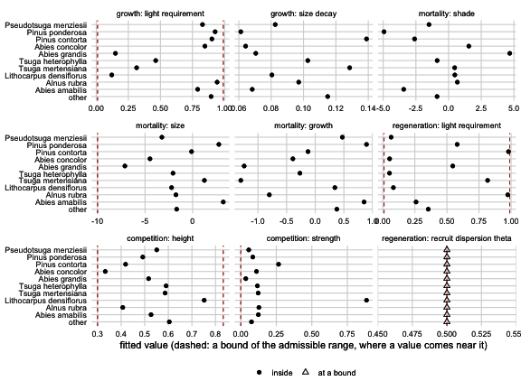
pars = "env" draws the environmental niches of the
processes whose response is linear: the fitted environmental term of
every species across the range of each predictor, the other held at its
mean. For growth and regeneration a higher curve means faster growth or
more recruits, for mortality more deaths:
plot(m, pars = "env")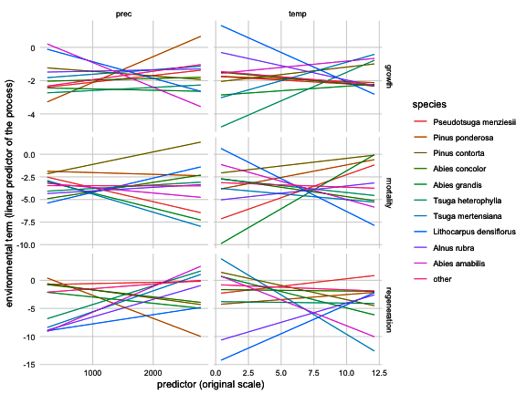
From bare ground
The bare-ground runs that evaluate() stored start from
an empty stand under the climate of the coldest, a middle and the
warmest training site, held constant for 500 years.
plot(ev, type = "bare_ground") draws them as successions,
one panel per site labelled with its climate; outside an evaluation,
simulateForest(m, bare_ground = TRUE, years = 500, sites = ...)
gives the same run.
plot(ev, type = "bare_ground")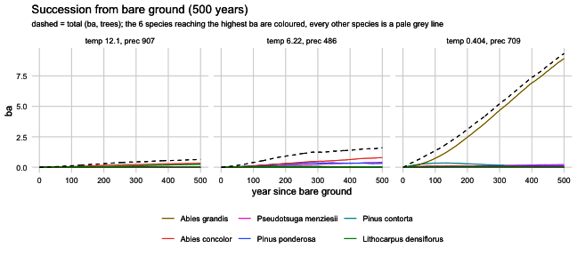
Basal area here is per patch of 0.06 ha, as in the inventory plots.
Over the last tenth of the run the three stands hold 0.6 to 8.9 m² per
patch (10 to 148 m² per hectare), led by Abies concolor and Abies
grandis (the bare-ground table of summary() above). These
are long extrapolations from two inventories, and the place to see
whether the fitted processes produce a plausible forest at all: a stand
that collapses, or one species that takes every site, would show here
long before it shows in the skill tables. Here it does: at the warmest
site the stand grows to about 148 m² per hectare, with Abies grandis
holding 95 % of it, which is not a plausible forest; the skill tables on
the held-out sites do not reveal this.
Trajectories against the inventories
simulateForest() returns the whole trajectory, not only
the census years. comparePlot(type = "timeseries"), or the
same plot(sim, obs, type = "timeseries"), draws it as a
line, averaged over the sites, with the observations at their census
years as points; species gives one row of panels per
species. The holdout sites, for the four most common species:
FINN.seed(1)
sim_test <- simulateForest(m, env = env_test, init_cohort = init_cohorts_test)
comparePlot(sim_test, obs_test, type = "timeseries", species = c(1, 2, 4, 5))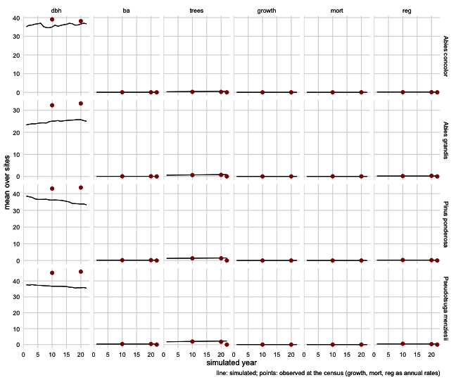
Each panel is the mean over the holdout sites where the species was
observed. The line shows what the model does between the censuses, which
the scatter plots cannot: whether a species’ basal area and stem numbers
rise or fall steadily, and whether the rates the inventories report at
year 10 and 20 sit on the simulated course. plot(sim_test)
alone draws the simulation without the observations.
Scoring mortality per tree
The mortality term above compares the mean death probability over the
simulated cohorts of a site, census and species with the pooled rate of
the inventory. That mean carries a compositional confound: mortality
changes several-fold from the smallest to the largest trees, so the cell
mean moves whenever the simulated size distribution moves, whether or
not the hazard function is right. The bundled sample carries every tree
behind those counts, fia_tree_dt and
fia_tree_test: one row per tree alive at the start of an
interval, with its diameter then and its fate. With
loss_aggregation = c(mortality = "tree") the mortality term
is scored on these trees instead, each at its measured diameter with the
light of the observed stand, against its 0/1 fate (see
?finn_loss, Scoring individual trees). Everything
else stays as in the mechanistic fit.
FINN.seed(42)
m_tree <- finn(
N_species = uniqueN(obs_dt$species),
recruits_dbh = 12.9,
competition_process = createProcess(~0, FINN::competition, optimizeSpecies = TRUE),
growth_process = createProcess(~ temp + prec, FINN::growth, optimizeSpecies = TRUE, optimizeEnv = TRUE),
regeneration_process = createProcess(~ temp + prec, FINN::regeneration_capped, optimizeSpecies = TRUE, optimizeEnv = TRUE),
mortality_process = createProcess(~ temp + prec, FINN::mortality, optimizeSpecies = TRUE, optimizeEnv = TRUE)
)
fit(m_tree,
env = env_dt, data = obs_dt, init_cohort = init_cohorts, device = "cpu",
epochs = EPOCHS, batchsize = 40L, patches = 4, patch_size = 0.06, lr = 0.01,
loss_aggregation = c(mortality = "tree"), # the mortality term on the observed trees
tree_data = fia_tree_dt,
plot_progress = FALSE
)predictTrees() runs the same per-tree code path on any
tree list, so both fits are scored on the holdout trees the same way:
the probability that each of the 10,109 holdout trees dies over its
interval, against what happened to it. The AUC needs no weighting here,
every tree is one trial. predictTrees() needs
env for exactly the sites in tree_data; two
holdout sites have no tallied tree at risk, so their climate rows are
left out.
auc_binom <- function(p, pos, neg) {
g <- data.table(p = p, pos = pos, neg = neg)[, .(pos = sum(pos), neg = sum(neg)), by = p][order(p)]
neg_below <- cumsum(g$neg) - g$neg
den <- sum(g$pos) * sum(g$neg)
if (den == 0) return(NA_real_)
sum(g$pos * (neg_below + 0.5 * g$neg)) / den
}
m$eval(); m_tree$eval()
env_tree <- env_test[siteID %in% fia_tree_test$siteID] # the sites that have trees at risk
tree_pred <- function(model, label)
cbind(fia_tree_test, model = label,
mort_pred = predictTrees(model, tree_data = fia_tree_test, env = env_tree, patch_size = 0.06)$mort_pred)
tp <- rbind(tree_pred(m, "site-level mortality"), tree_pred(m_tree, "per-tree mortality"))
tree_auc <- tp[, .(trees = .N, deaths = sum(died), AUC = round(auc_binom(mort_pred, died, 1 - died), 3)), by = model]
tree_auc
#> model trees deaths AUC
#> <char> <int> <num> <num>
#> 1: site-level mortality 10109 734 0.573
#> 2: per-tree mortality 10109 734 0.601Both fits rank the holdout trees alike, AUC 0.573 for the site-level and 0.601 for the per-tree fit: on this sample the per-tree term buys little ranking skill, which is the picture of the mortality vignette, where two censuses carry little transferable mortality signal.
Where the two differ is in the size classes. Predicted and observed
yearly mortality of the holdout trees by diameter at the start of the
interval, in percent per year (a tree’s interval probability
p over period_length years is the yearly rate
1 - (1 - p)^(1 / period_length)):
annual <- function(p, years) 1 - (1 - p)^(1 / years)
tp[, dbh_class := cut(dbh, c(0, 20, 30, 45, 61, 80, 100, Inf),
labels = c("13-20", "20-30", "30-45", "45-61", "61-80", "80-100", ">100"))]
observed <- tp[model == "per-tree mortality",
.(trees = .N, deaths = sum(died),
observed = round(100 * annual(mean(died), mean(period_length)), 2)), by = dbh_class]
predicted <- dcast(tp[, .(pred = round(100 * mean(annual(mort_pred, period_length)), 2)), by = .(dbh_class, model)],
dbh_class ~ model, value.var = "pred")
size_tab <- merge(observed, predicted, by = "dbh_class")[order(dbh_class)]
size_tab
#> Key: <dbh_class>
#> dbh_class trees deaths observed per-tree mortality site-level mortality
#> <fctr> <int> <num> <num> <num> <num>
#> 1: 13-20 3593 338 0.98 0.84 1.70
#> 2: 20-30 2866 201 0.72 0.84 1.08
#> 3: 30-45 1618 93 0.59 0.81 0.97
#> 4: 45-61 553 34 0.63 0.69 0.72
#> 5: 61-80 812 45 0.57 0.56 0.54
#> 6: 80-100 450 16 0.36 0.50 0.45
#> 7: >100 217 7 0.33 0.31 0.22The site-level fit reproduces the pooled rate of a cell and leaves the shape over size to the simulated size distribution: for the trees below 20 cm it predicts 1.7 % a year against the observed 0.98 %, for the trees above 100 cm 0.22 against 0.33 %, the large-tree arm of the size response that site-level rates leave unidentified. Scored per tree, the same hazard function predicts 0.84 and 0.31 % in these two classes and stays within a factor of 1.4 of the observation in every class. Neither route is calibrated in every class; compare the columns class by class.
The recruitment cap, and why stem counts hinge on a few bursts
Regeneration is the response with the least information in it: 87% of
the site × census × species cells record no recruit at all, and a
recruit enters at 12.9 cm, so over a ten-year interval it adds little to
basal area. The unbounded mechanistic mean rises as
exp(env), so a steep climate coefficient could turn a warm,
wet site into a burst of hundreds of stems in one year. The default
regeneration_capped() bounds it with a Beverton-Holt cap,
K m / (K + m): one carrying capacity K (stems
per hectare and year) shared by all species, started at the largest
observed recruitment per hectare and year and held near it by a weak
prior, then fitted with everything else
(?regeneration_capped; ?recruitment lists the
options). The fitted cap of the joint model:
# the fitted carrying capacity, recruits per hectare and year
K <- exp(as.numeric(m$reg_logK))
K
#> [1] 14.57163
# the largest expected recruitment of a holdout site and species over an interval
max_reg <- ev$holdout$matched[variable == "reg", max(pred)]
max_reg
#> [1] 35.67944The fitted K is 14.6 recruits per hectare and year. The
largest expected recruitment of any holdout site and species over a
whole census interval is 36 per hectare, about 3.6 a year, far below the
cap: on this sample the cap is a guard rail that the climate response
never reaches.
The stem count deserves a closer look, because its skill is the least
stable of the three state variables. Recruits are sampled at
prediction time (createProcess(sample_regeneration = TRUE),
the default), so a cell whose expected recruitment is large can receive
a burst in one simulation and nothing in the next. The same model
evaluated five times on the holdout with different seeds:
reps <- lapply(1:5, function(s) {
FINN.seed(s)
evaluate(m, holdout = list(data = obs_test, env = env_test,
init_cohort = init_cohorts_test))$holdout
})
trees_by_seed <- rbindlist(lapply(1:5, function(s)
reps[[s]]$skill[variable == "trees", .(seed = s, r2 = round(r2, 3), r = round(r, 3),
rmse = round(rmse, 3))]))
trees_by_seed
#> seed r2 r rmse
#> <int> <num> <num> <num>
#> 1: 1 0.807 0.899 0.783
#> 2: 2 0.801 0.895 0.794
#> 3: 3 0.809 0.900 0.778
#> 4: 4 0.813 0.902 0.771
#> 5: 5 0.812 0.902 0.771
# which cells carry the stem error? those whose predicted recruitment is in the
# top 1 % of the same simulation
burst <- rbindlist(lapply(1:5, function(s) {
d <- reps[[s]]$matched
merge(d[variable == "trees", .(siteID, year, species, obs, trees = pred)],
d[variable == "reg", .(siteID, year, species, reg = pred)],
by = c("siteID", "year", "species"))[, seed := s]
}))
burst[, top := reg >= quantile(reg, 0.99), by = seed]
total_sq_error <- burst[, sum((obs - trees)^2)]
burst_tab <- burst[, .(cells = .N, share_of_sq_error = round(sum((obs - trees)^2) / total_sq_error, 2),
max_reg = round(max(reg), 1)), by = .(top_1pct_recruitment = top)]
burst_tab
#> top_1pct_recruitment cells share_of_sq_error max_reg
#> <lgcl> <int> <num> <num>
#> 1: FALSE 21780 0.84 11.2
#> 2: TRUE 220 0.16 35.8The 1 % of cells with the largest predicted recruitment carry 16 % of
the squared stem error, and the seed-to-seed spread in the stem metrics
is the same mechanism at work: a site that receives a burst in one draw
and not in the next. That is why a single stems R² on a holdout should
not decide between two models whose regeneration differs; compare
several seeds, or score the expected stand
(sample_regeneration = FALSE at prediction time), and look
at the largest predicted recruitment, the tail the cap acts on.
Interpreting the growth process with ALE
ALE() returns the accumulated local
effect of every driver on each process, the effect measure of
choice when predictors are correlated, because it accumulates
local changes within the observed data instead of extrapolating
to unrealistic combinations. Running it on both fitted
models lets us read what growth responds to and compare the
mechanistic process with the neural-network hybrid, across growth’s
structural inputs (tree size, light) and its
environmental niche (climate). It returns one table per
process (growth, mortality,
regeneration). Without env and
init_cohort it reads the effects over all training sites
the model keeps from fit(); as for summary(),
we use the 30-site subset, which is much faster.
plot() draws the environmental drivers of the three
processes, one line per species, here of the mechanistic model:
ale_proc <- ALE(m, env = env_xai, init_cohort = init_xai, plot = FALSE) # mechanistic growth
ale_hyb <- ALE(m_hybrid, env = env_xai, init_cohort = init_xai, plot = FALSE) # growth = NN
plot(ale_proc)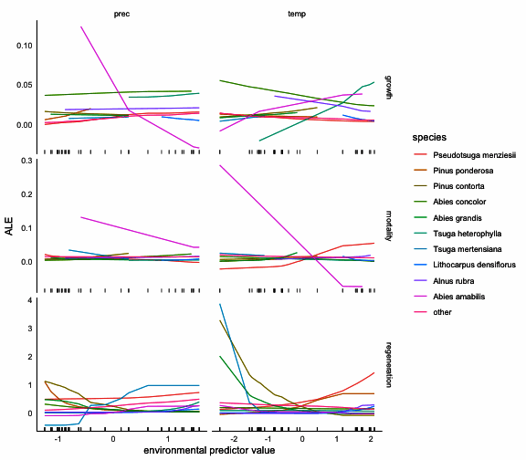
The drivers are on the standardised scale the model works on. To compare the two models, we use the growth table of each:
# one tidy table with both variants. Environmental drivers come back on the
# model's scaled axis, so back-transform temp/prec to natural units (deg C, mm);
# the structural drivers (dbh, light) are already on their natural axes.
to_natural <- function(a, model) {
sc <- as.data.table(model$env_scaling)[, .(var = variable, center, scale)]
merge(data.table(a), sc, by = "var", all.x = TRUE)[!is.na(center), x := x * scale + center]
}
growth <- rbind(
to_natural(ale_proc$growth, m)[, model := "Process (mechanistic)"],
to_natural(ale_hyb$growth, m_hybrid)[, model := "Hybrid (growth = NN)"])
growth <- merge(growth, species_dt, by = "species")One helper plots the growth ALE of both variants for any set of drivers, one panel per species × driver, with independent axes so responses of very different magnitude stay legible side by side:
plot_growth_ale <- function(vars, labs) {
d <- growth[var %in% vars & species %in% c(1, 2, 4, 5)] # the four focal species
d[, var := factor(var, levels = names(labs))]
ggplot(d, aes(x, ale, colour = model)) +
geom_line(linewidth = 0.7) +
facet_grid(species_name ~ var, scales = "free",
labeller = labeller(var = as_labeller(labs, label_parsed),
species_name = label_value)) +
scale_colour_manual(values = model_cols) +
labs(x = NULL, y = "accumulated local effect on growth", colour = NULL) +
theme_minimal() + theme(legend.position = "top", strip.text.y = element_text(angle = 0))
}Environmental niches
Because the environmental responses are learned rather than prescribed, each curve is an inferred niche, how a species’ growth scales along a climate gradient. The mechanistic process can bend a curve only as far as its exponential response to a linear climate term allows; the network can shape it freely, so a curve with an optimum inside the sampled range is something only the hybrid can draw.
Read these as illustrations of what ALE recovers, not as settled ecology. The per-species shapes are noisier than the structural responses below; growth is weakly constrained by two inventories (see the caveat above), and the mechanistic and hybrid curves do not always agree, even on the sign of a response. That disagreement is itself informative: where two models trained on the same data diverge, the data are not pinning that response down.
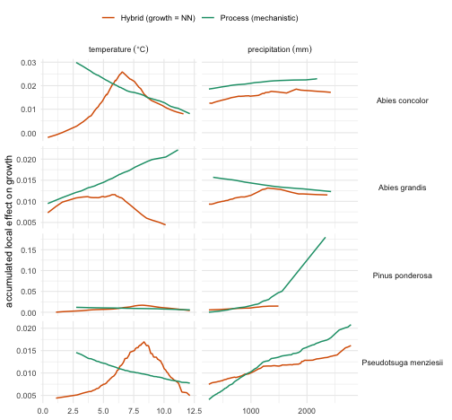
Which drivers matter: feature_importance()
The niches show the shape of each response;
feature_importance() gives its magnitude. It
permutes each environmental predictor and re-simulates, measuring the
resulting increase in prediction error, a re-simulation counterpart to
the analytical importance in summary(). Below we read off
the importances for the growth process of the four focal species:
FINN.seed(1)
fi <- feature_importance(m, env_dt, init_cohorts, nperm = 20L, seed = 1L,
patches = 4, patch_size = 0.06, device = "cpu")
fimp_growth <- merge(data.table(fi$growth)[species %in% c(1, 2, 4, 5)],
species_dt, by = "species")
ggplot(fimp_growth, aes(reorder(variable, importance), importance, fill = importance)) +
geom_col() +
coord_flip() +
facet_wrap(~species_name, nrow = 1) +
scale_fill_viridis_c(guide = "none") +
labs(x = NULL, y = "permutation importance (delta error)") + theme_minimal()
The importances are learned per species, not shared: the same driver can carry most of the response of one species and little of another.
Response to size and light: did the network recover the mechanistic form?
The point of a hybrid is to ask which functional form the neural network learned and how it compares to the mechanistic function it replaced. In the mechanistic process growth declines with tree size and increases with light availability, by construction. Where the network recovers the same shape without being given the functional form, the mechanistic form was a reasonable choice; where its curves part from the mechanistic ones, the data do not pin the response down.
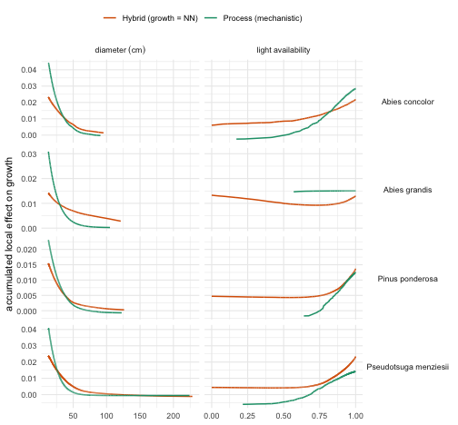
Each curve spans only the range its own model actually simulates (ALE never extrapolates), so where the process and hybrid cover different ranges, the two models simply place that species in different conditions; the mismatch is information, not an artefact.
sessionInfo()
#> R version 4.5.0 (2025-04-11)
#> Platform: aarch64-apple-darwin20
#> Running under: macOS 26.5.1
#>
#> Matrix products: default
#> BLAS: /Library/Frameworks/R.framework/Versions/4.5-arm64/Resources/lib/libRblas.0.dylib
#> LAPACK: /Library/Frameworks/R.framework/Versions/4.5-arm64/Resources/lib/libRlapack.dylib; LAPACK version 3.12.1
#>
#> locale:
#> [1] en_US.UTF-8/en_US.UTF-8/en_US.UTF-8/C/en_US.UTF-8/en_US.UTF-8
#>
#> time zone: Europe/Berlin
#> tzcode source: internal
#>
#> attached base packages:
#> [1] stats graphics grDevices utils datasets methods base
#>
#> other attached packages:
#> [1] ggplot2_3.5.2 data.table_1.18.6.1 torch_0.15.1
#> [4] FINN_0.2.0
#>
#> loaded via a namespace (and not attached):
#> [1] Matrix_1.7-3 bit_4.6.0 gtable_0.3.6 dplyr_1.1.4
#> [5] compiler_4.5.0 tidyselect_1.2.1 Rcpp_1.1.2 callr_3.7.6
#> [9] splines_4.5.0 scales_1.4.0 lattice_0.22-6 R6_2.6.1
#> [13] labeling_0.4.3 generics_0.1.4 knitr_1.50 tibble_3.3.0
#> [17] pillar_1.11.0 RColorBrewer_1.1-3 rlang_1.2.0 xfun_0.57
#> [21] bit64_4.6.0-1 viridisLite_0.4.2 cli_3.6.6 withr_3.0.2
#> [25] magrittr_2.0.3 mgcv_1.9-1 ps_1.9.1 grid_4.5.0
#> [29] processx_3.8.6 lifecycle_1.0.5 nlme_3.1-168 coro_1.1.0
#> [33] vctrs_0.6.5 evaluate_1.0.5 glue_1.8.0 farver_2.1.2
#> [37] abind_1.4-8 tools_4.5.0 pkgconfig_2.0.3